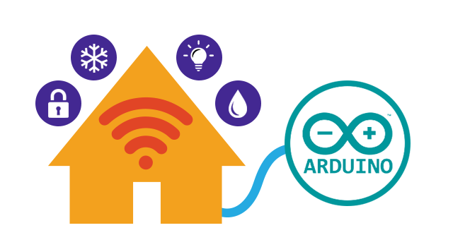
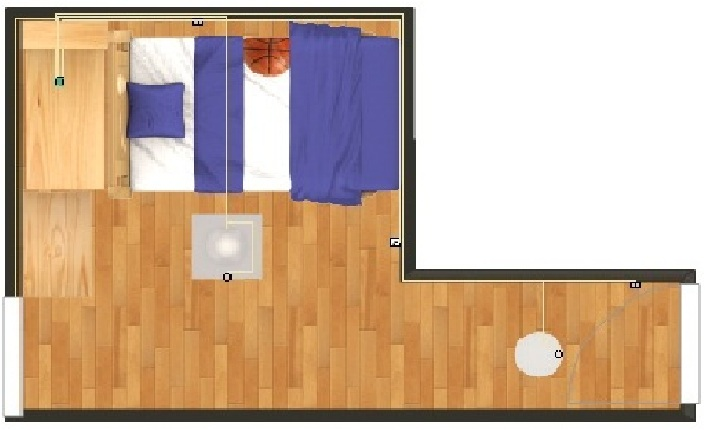
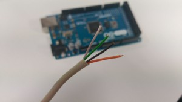
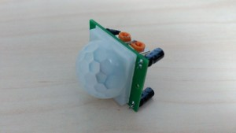
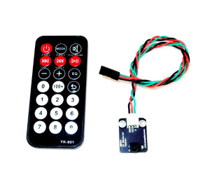
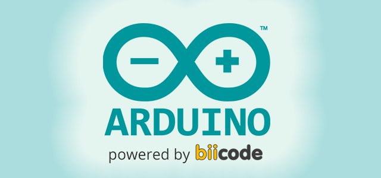
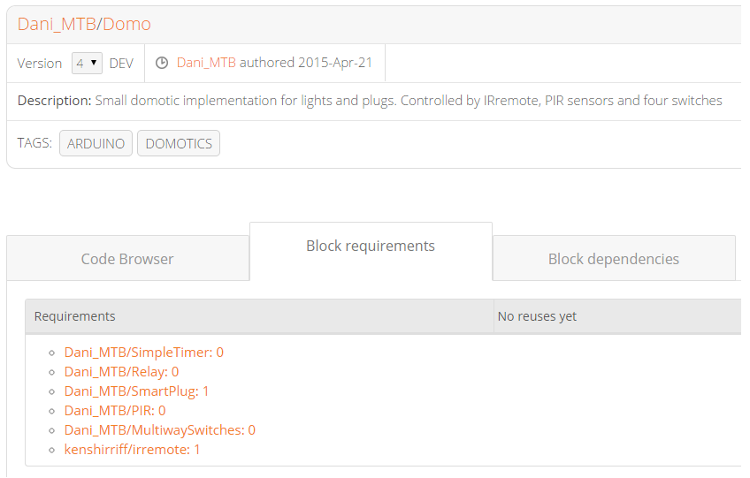

Turning the heating on before arriving home, watching real-time video from the inside, automatically turning the alarm on when you leave home… These are common tasks you would like to implement in a smart domotized home.
However, incorporating domotic systems to our home is still hard due to lack of an effective, simple and cheap commercial solution that fits our needs, or maybe the steps required to make it yourself are far too complex. When you realize the options available aren’t what you were looking for, and you have tried DIY solutions to automate things with Arduino, the idea comes up clear to your mind: I want to create my own domotics with arduino.

In this post I will talk about my domotics project using Arduino to incorporate some automation to my bedroom.
Cheap, simple and completely customizable
When I started to think about my own domotic system I tried to follow three main ideas:
- Simple: Easy to develop system focused on usefulness. Both form the hardware and the software side.
- Cheap: Minimum high-cost components, standard parts, common Arduino sensors and JUST ONE Arduino board.
- Customizable: Modular design, easy to expand and completely adjusted to fit someone needs.
Project Domo: Domotics with Arduino
My domotics project is mainly based on the automation of lights, blinds, plugs and the alarm clock.
Currently the project is still developing and things working are:
- Automatic lights
- Smart plug
- Remote Control
This is the configuration of my bedroom:

- Two lights, one in the corridor (at the entrance) and the main light.
- Two double three-way-switches, one next to the door and the other one nex to to my bed.
- One plug at the right wall.
- Arduino MEGA 2560 next to the bed (centralized control).
Materials
- Arduino Mega 2560
- 2 PIR sensors
- 4 conductor wire
- 3 Relay modules
- Buttons
- IR receiver
- Remote Control
The domotic system incorporates just one Arduino Mega 2560 board to ensure a high amount of digital I/O pins. The board is connected to different electronic modules of sensors/actuators by a 4 conductor wire.

The original wires for the switches of my bedroom were replaced by this other kind. Power supply goes directly to the lights which are now controlled by a relay.
Plugs maintain original wiring and are only equipped with another relay to control power supply and a button to interact with its operation modes.
PIR (Passive InfraRed) sensors are placed above the door and the other on the ceiling next to the main light.

The IR receiver is next to the Arduino board to ensure the maximum visibility to control everything from the remote control.

Hacking Arduino
There are great projects using Arduino with domotic pruposes, like Open Home Automation, that are very well developed or more specific ones, like Souliss or Excontrol, but those solutions use more than one Arduino board and have more expensive components.

To program Arduino in a robust and structured way I have chosen C++ language and splitted the code in a modular way (the same way the electronics are set-up). This functionalities are decoupled and can be incorporated progressively to the domotic system or reused in other similar projects. Here’s where the potential of biicode’s way of programming comes to make the difference.
Utilities to incorporate to an Arduino project are countless, but many times there’s no reusable code and you have to completely adapt it. biicode lets you reuse third-party code and include it directly to your project.
My domotic project is stored at Dani_MTB/Domo block and it has two implementations:
- main.cpp: currently code running in the domotic system of my bedroom.
- domo.cpp: parallel implementation to test new features.
This is main.cpp’s code:
1 2 3 4 5 6 7 8 9 10 11 12 13 14 15 16 17 18 19 20 21 22 23 24 25 26 27 28 29 30 31 32 33 34 35 36 37 38 39 40 41 42 43 44 45 46 47 48 49 50 51 52 53 54 55 56 57 58 59 60 61 62 63 64 65 66 67 68 69 70 71 72 73 74 75 76 77 78 79 80 81 82 83 84 85 86 87 88 89 90 91 92 93 94 95 96 97 98 99 100 101 102 103 104 105 106 107 108 109 110 111 112 113 114 115 116 117 | #include "kenshirriff/irremote/irremote.h" #include "Dani_MTB/SimpleTimer/SimpleTimer.h" #include "Dani_MTB/MultiwaySwitches/MultiwaySwitches.h" #include "Dani_MTB/Relay/Relay.h" #include "Dani_MTB/SmartPlug/SmartPlug.h" #include "Dani_MTB/PIR/PIR.h" Relay corridorLight; //Corridor lights of my bedroom Relay centralLight; //Main lights of my bedroom MultiwaySwitches switchesCentral; //Two switches (one near my bed and other one at the entrance) that control main lights MultiwaySwitches switchesCorridor; //Two switches (one near my bed and other one at the entrance) that control corridor lights PIR corridorSensor=PIR(14); //PIR sensor in corridor of my bedroom PIR centralSensor=PIR(15); //PIR sensor in the center of my bedroom SmartPlug rightPlug=SmartPlug(50, LOW_LVL, 200000, 51); //Plug at the right, pin 50 for relay, activated with a relay with LOW LEVEL, 200 seconds to desactivate, and 51 for PLUG button IRrecv IR(40); //Pin for remote IR receiver decode_results remoteCode; //Variable to store RemoteControl's codes bool MODE=false; void setup() { Serial.begin(9600); switchesCentral.setSwitch(2); //Switch 1 near my bed for main lights switchesCentral.setSwitch(3); //Switch 2 near the door for main lights switchesCorridor.setSwitch(4); //Switch 3 near my bed for corridor lights switchesCorridor.setSwitch(5); //Switch 4 near the door for corridor lights centralLight.setup(9, HIGH_LVL); //Relay (active at HIGH LEVEL) controlling main lights centralLight.off(); //Main Lights start OFF (In case power supply of arduino comes OFF and program resets) corridorLight.setup(8, LOW_LVL); //Relay (active at LOW LEVEL) controlling corridor lights corridorLight.off(); //Corridor Lights start OFF (In case power supply of arduino comes OFF and program resets) IR.enableIRIn(); IR.blink13(true); } void loop() { rightPlug.loop(); //Internal loop for SmartPlug if(switchesCentral.change()) //If the state of switches for main lights changes { centralLight.commute(); //Commute the state of the main lights } if(switchesCorridor.change()) //If the state of switches for main lights changes { corridorLight.commute(); //Commute the state of the main lights } if(corridorSensor.rising_edge()) //If there's a positive edge in corridor's PIR sensor (detects a person) { corridorLight.on(); //Power ON Corridor Lights } if(corridorSensor.falling_edge()) //If there's a negative edge in corridor's PIR sensor (NOT detects a person) { corridorLight.off(); //Power OFF Corridor Lights } if(centralSensor.rising_edge()) //If there's a positive edge in main's PIR sensor (detects a person) { corridorLight.on(); //Power ON Main Lights } if(centralSensor.falling_edge()) //If there's a negative edge in main's PIR sensor (NOT detects a person) { corridorLight.off(); //Power OFF Main Lights } //+++++++++++++++++++REMOTE CONTROL CODE++++++++++++++++++++++ if(IR.decode(&remoteCode)) { if(remoteCode.value==16736925) //If MODE button is pressed MODE=true; //Enable MODE if(remoteCode.value==16753245) //If 1 button is pressed Remote Power ON/OFF central light { if(centralLight.getState()) //Power ON/OFF main lights centralLight.off(); else centralLight.on(); } if(remoteCode.value==16724175) //If 0 button is pressed { if(rightPlug.getState()) //If plug is ON { rightPlug.off(); //Power off the Plug } else //If plug is OFF { if(MODE) //If MODE is enabled { rightPlug.on_Sensor(); //Power ON Plug in Sensor mode MODE=false; } else //If MODE is disabled, and plug is OFF rightPlug.on(); //Power ON plug in Normal mode } } IR.resume(); //Resume receiving remote codes } // ++++++++++++++++++++DISABLE PLUG IF SENSORS ARE OFF+++++++++++++++++++++ if(!centralSensor.getState() && !corridorSensor.getState()) //If both PIR sensors don't detect { rightPlug.off_Sensor(); //Power off rightPlug in sensor mode } } |
As you can see there are some class definitions that make the program look so much cleaner and it also makes it easy to understand what’s going on!
Reusing code: Make domotics powerful
If you take a look at [requirements] section you’ll notice that some portions of code (the classes used in the code) are reused from other blocks, and even those other blocks reuse more blocks again.

Here is a brief explanation for each one:
- MultiwaySwitches: This block implements a C++ class that encapsulates the usage of three-way switches that power on and off the same light. Switches are now digital arduino inputs (5v), which is safer for people when manipulating them.
- SmartPlug: Here is where the code for plugs is stored. This class incorporates the activation of power supply by a relay when a button is pressed. You can select two modes: Normal activation and Sensor activation. It also incorporates a security time to automatically power off the plug. SmartPlug is useful if you want to connect an electric stove for example. This block reuses some other utilities in other blocks of biicode like SimpleTimer, Button or Relay.
- Relay: Relay block simplifies the usage of relays with arduino (handles HIGH or LOW level activation). In my case, it is useful to control lights and plugs.
- IRremote: IRremote implements and simplifies the usage of a remote control receiver for different kinds of standard remotes.
- PIR: A class that encapsulates PIR sensor’s code, with methods to detect rising or falling edges and the state of the sensor.
Other developed classes and utilities are already allocated in biicode so you can incorporate and use them in your project with just an #include: Clock (Non-blocking Real Time clock without RTC module), Ultrasonic…
Future implementations
There’s still a lot work ahead in my small domotic system based in arduino: internet wireless connection, a graphical user interface with a display (under construction), blind implementation… However, thanks to its modularity, robust C++ code and biicode powered Arduino, this system is a great bet to achieve a full domotic system for our bedroom.
As always, we’re available at our forum or Stackoverflow tag. You can also write us and request features at our roadmap.
Related Posts